Multimédia
Nesta página encontra conteúdos multimédia
Fotografias
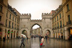
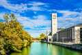
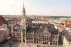
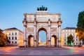
 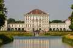
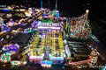
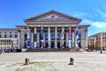
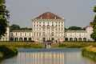
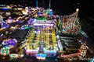
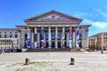
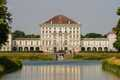
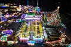
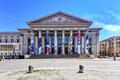
Vídeo
Poema
Entre Alpes que vigiam de longe,
a cidade respira história e futuro.
Catedrais erguem-se como vozes do tempo,
e o som dos sinos mistura-se ao riso nas praças.
No coração, a Marienplatz desperta,
onde o relógio dança histórias antigas.
Cervejas douradas correm como rios de festa,
e a música ecoa em cada taberna.
Munique é verde nos parques infinitos,
é arte nos museus que guardam mundos,
é ciência, é força, é delicadeza,
um mosaico vivo de tradição e modernidade.
Caminhar por suas ruas
é sentir-se entre o ontem e o amanhã:
um abraço bávaro
que aquece mesmo no inverno mais frio.
A cidade que mais quero visitar!!!